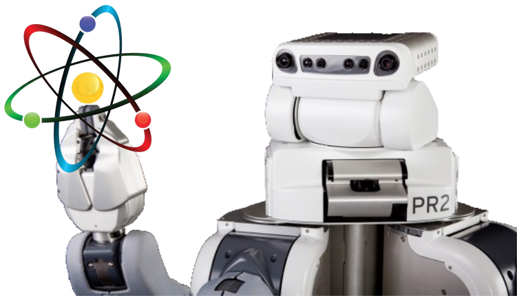

ATOM
ATOM is a calibration framework using Atomic Transformations Optimization Method.
https://github.com/lardemua/atom
It contains a set of calibration tools for multi-sensor, multi-modal, robotic systems, based on the optimization of atomic transformations, as provided by a ROS based robot description. Moreover, it provides several scripts to facilitate all the steps of a calibration procedure.
If this work is helpful for you please cite these publications.
Multimedia
Take a look at the ATOM youtube playlist.
Installation
Clone the atom repository to a directory inside your catkin workspace:
git clone https://github.com/lardemua/atom
then install requirements.
sudo pip3 install -r requirements.txt
Configure environment variables
We often use two enviroment variables to allow for easy cross machine access to bagfiles and datasets. If you want to use these you can also add these lines to your .bashrc or .zhsrc, adjusting the paths according to your case:
export ROS_BAGS="$HOME/<bagfiles"
export ATOM_DATASETS="$HOME/datasets"
and then you can refer to these environment variables when providing paths to atom scripts, e.g.:
roslaunch <your_robot_calibration> calibrate.launch dataset_file:=$ATOM_DATASETS/<my_dataset>/dataset.json
and you can also refer to them inside the calibration configuration file
Contributors
- Miguel Riem Oliveira - University of Aveiro
- Afonso Castro - University of Aveiro
- Eurico Pedrosa - University of Aveiro
- Tiago Madeira - University of Aveiro
- André Aguiar - INESC TEC
- Daniela Rato - University of Aveiro
Current Maintainers
- Miguel Riem Oliveira - University of Aveiro
- Daniela Rato - University of Aveiro
- Manuel Gomes - University of Aveiro